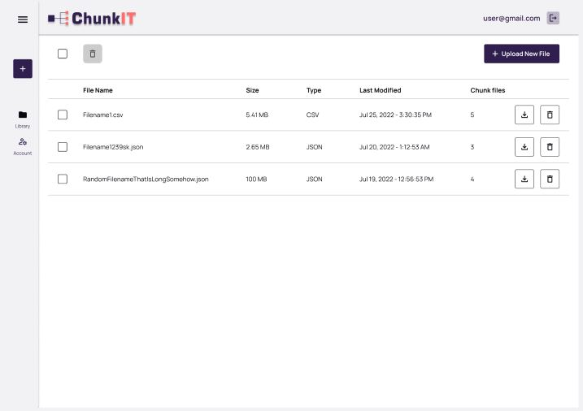

Welcome to user documentation
Get all the help for easy navigation
Understanding the process of chunking
Chunking is a process of splitting large files into smaller unitds of files called chunks. In some applications, such as a remote data compression, data synchronizatuin and data duplication. Chunking is important because it determines the duplicate detection performance of the system. Chunk file is a small and handy application designed to help you split large into pieces of a set size, so you can easily transfer them without any loss of data.
What is ChunkIT?
ChunkIt is a free web-based platform that splits large or heavy CSV and JSON files. When a user uploads a large file of up to 250MB to our platform, our Python Panda modules begin authenticating the files to determine if they are CSV or JSON. If the files are none of these determined inputs or bigger than the size, our platform would not accept them, but if the data input is true, it accepts the files after determining the state, and the process of splitting commences through the help of the panda modules. The data is stacked in smaller files querying the number of parts or the size the user needs to split it. This is done through the use of logic. When the process of splitting is completed, the result is zipped using shutil modules, ready for the user to download.
Library Page
Users can view saved files, download chunked files, download the original file and delete some or all saved files by visiting the library page.

Getting started
For a user to get started with using the chunking feature of the platform, they need to create an account by registering with their email address to become an authenticated user. This means that an unauthenticated user can not use the chunking feature. However, the unauthenticated user can interact with the platform's documentation by accessing the documentations tab in the header and footer sections. They can also go through the platform's landing page and FAQ section to learn more about its features.
How to use ChunkIT
Upon creating an account, the user is redirected to the user dashboard where they can start uploading files they want to process. They choose the option to upload a new file, and a screen appears that allows them to upload a file. The platform currently supports chunking JSON and CSV files; however, more file formats will be supported in future versions. The user then uploads their file by either dragging and dropping it on the screen, or browsing through their device's file system. The platform can only accept files up to 250 MB in size and are also of the correct format, CSV or JSON. Once the file uploaded by the user satisfies the requirements, the user can choose the size of the chunk files they require. The size of the chunk should not be above the original file size. If it is, the file will not be chunked. If the size of the chunk is within the acceptable range, the user is directed to a screen where they can download a zipped file containing the chunked file. The user can also choose to download the files later, and their files are saved on the dashboard.
Upload File Modal
In this modal you can upload the files you want to chunk. To start
chunking, this is the step by step process you should take;
First click the “upload file” button
Next select files from your local device, github or any other
storage platform you use
Next drop the selected file inside the box in the upload file modal
Next click the number of chunks you want your file to be and start
chunking.

Generated File Modal
Once your files are generated into smaller chunks, you can download the files immediately or later, to download later click on the download later button.
Delete File Modal
This is the modal that helps to delete files that are no longer
To delete: After opening your saved file modal, a list of all saved
files will be shown along with a delete icon.
Click on the delete icon (bin icon).
A delete confirmation pop-up will come up. Click on “delete files”
to proceed.